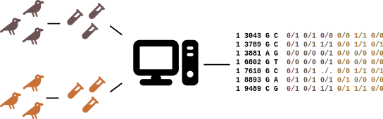

@SRR9309790.10003134
TAAATCGATTCGTTTTTGCTATCTTCGTCT
+
AAFFFJJJJJJJFJJJJJJJJJJJJJJJJJ
@SRR9309790.10003222
TAAATCGATTCGTTTTTGCTATCTTCGTCT
+
AAFFFJJJJJJJJJJJJJJJJJJJJJJJJJData and definitions
Populations genetics foundations
Per Unneberg
DNA variation

DNA variation - monomorphic sites
| 1 | 2 | 3 | 4 | 5 | 6 | 7 | 8 | 9 | 10 | 11 | 12 | 13 | 14 | 15 |
|---|---|---|---|---|---|---|---|---|---|---|---|---|---|---|
| T | T | A | C | A | A | T | C | C | G | A | T | C | G | T |
| T | T | A | C | G | A | T | G | C | G | C | T | C | G | T |
| T | C | A | C | A | A | T | G | C | G | A | T | G | G | A |
| T | T | A | C | G | A | T | G | C | G | C | T | C | G | T |
| * | * | * | * | * | * | * | * | * | T |
The alignment has 4 DNA sequences where each sequence has length L=15. A site where all nucleotides (alleles) are identical is called a monomorphic site (indicated with asterisks above). There are 9 monomorphic sites.
DNA variation - segregating sites
| 1 | 2 | 3 | 4 | 5 | 6 | 7 | 8 | 9 | 10 | 11 | 12 | 13 | 14 | 15 |
|---|---|---|---|---|---|---|---|---|---|---|---|---|---|---|
| T | T | A | C | A | A | T | C | C | G | A | T | C | G | T |
| T | T | A | C | G | A | T | G | C | G | C | T | C | G | T |
| T | C | A | C | A | A | T | G | C | G | A | T | G | G | A |
| T | T | A | C | G | A | T | G | C | G | C | T | C | G | T |
| * | * | * | * | * | * |
A site where there are different nucleotides (alleles) is called a segregating site (indicated with asterisks above), often denoted S. There are S=6 segregating sites.
Alternative names for segregating site are:
- polymorphism
- mutation
- single nucleotide polymorphism (SNP)
mutation here and onwards refers to the process that generates new variation and the new variants generated by this process
In contrast to mutation which corresponds to within-species variation, a substitution refers to DNA differences between species.
DNA variation - major and minor alleles
| 1 | 2 | 3 | 4 | 5 | 6 | 7 | 8 | 9 | 10 | 11 | 12 | 13 | 14 | 15 |
|---|---|---|---|---|---|---|---|---|---|---|---|---|---|---|
| T | T | A | C | A | A | T | C | C | G | A | T | C | G | T |
| T | T | A | C | G | A | T | G | C | G | C | T | C | G | T |
| T | C | A | C | A | A | T | G | C | G | A | T | G | G | A |
| T | T | A | C | G | A | T | G | C | G | C | T | C | G | T |
| * | * | * | * | * | * |
Much of the nucleotide variation we study consists of bi-allelic SNPs. The most common variant is called the major allele, and the least common the minor allele.
The set of alleles found on a single sequence is called haplotype.
Describing DNA variation - heterozygosity
| 1 | 2 | 3 | 4 | 5 | 6 | 7 | 8 | 9 | 10 | 11 | 12 | 13 | 14 | 15 |
|---|---|---|---|---|---|---|---|---|---|---|---|---|---|---|
| T | T | A | C | A | A | T | C | C | G | A | T | C | G | T |
| T | T | A | C | G | A | T | G | C | G | C | T | C | G | T |
| T | C | A | C | A | A | T | G | C | G | A | T | G | G | A |
| T | T | A | C | G | A | T | G | C | G | C | T | C | G | T |
| * | * | * | * | * | * |
Once we have a sample of sequences we want to describe the observed variation. At any position the ith allele has sample frequency p_i, where the sum of all allele frequencies is 1. For instance, at site 1, p_T=1 (and by extension p_A=p_C=p_G=0), and at site 2 p_C=1/4 and p_T=3/4.
Heterozygosity
The heterozygosity at a site j is given by
h_j = \frac{n}{n-1}\left(1 - \sum_i p_i^2\right)
where the summation is over all alleles and p_i is the frequency of the i-th allele
Exercise: calculate the heterozygosity at sites 1, 2 and 5
\begin{align*} h_1 & = \frac{4}{3} \left(1 - p_T^2 \right) = 0 \\[10pt] h_2 & = \frac{4}{3} \left(1 - \left(p_C^2 + p_T^2\right) \right) = \frac{4}{3} \left( 1 - \left(\frac{1}{16} + \frac{9}{16}\right)\right) = \frac{1}{2}\\[10pt] h_5 & = \frac{4}{3} \left(1 - \left(p_A^2 + p_G^2\right) \right) = \frac{4}{3} \left( 1 - \left(\frac{1}{4} + \frac{1}{4}\right)\right) = \frac{2}{3} \end{align*}
Describing DNA variation - nucleotide diversity
| 1 | 2 | 3 | 4 | 5 | 6 | 7 | 8 | 9 | 10 | 11 | 12 | 13 | 14 | 15 |
|---|---|---|---|---|---|---|---|---|---|---|---|---|---|---|
| T | T | A | C | A | A | T | C | C | G | A | T | C | G | T |
| T | T | A | C | G | A | T | G | C | G | C | T | C | G | T |
| T | C | A | C | A | A | T | G | C | G | A | T | G | G | A |
| T | T | A | C | G | A | T | G | C | G | C | T | C | G | T |
| * | * | * | * | * | * |
Nucleotide diversity \pi
The nucleotide diversity is the sum of site heterozygosities:
\pi = \sum_{j=1}^S h_j
where S is the number of segregating sites
Calculate the nucleotide diversity
Observation: h_i either 1/2 or 2/3 (for sites with p_{major}=p_{minor}).
\pi = \frac{1}{2} + \frac{2}{3} + \frac{1}{2} + \frac{2}{3} + \frac{1}{2} + \frac{1}{2} = 3\frac{1}{3}
Often we report \pi per site:
\pi = 3.33/15 = 0.222
The real data
LG4:30430
30431 30441 30451 30461
CATTGGCAATGGCATCAGTTGAGCATCTTAGTACGAACTAAAAGCTG
...............M...............................
...............A...
...............A.................
..............................................
..............................................
..............................................
...............A...............................
...............A...............................
,,,,,,,,,,,,a,,a,,,,,,,,,,,,,,,,,,,,,,,,,,,,a,,
,,,,,,,,,,,,,,,a,,,,,,,,,,,,,,,,,,,,,,,,,,,,,,,
,,,,,,,,,,,,,,,a,,,,,,,,,,,,,,,,,,,,,,a,,,,,aa,
,,,,,,,,,,,,,,,a,,,,,,,,,,,,,,,,,,,,,,,,,,,,,,,
,,,,,,,,,,,,,a,,,,,,,,,,,,,,,,,,,,,,,,,,,,,,,
Before getting to variants and genotypes a lot of processing has to be done, from FASTQ input, to mapped data, to variant and genotype calls.
The process

Bibliography
Casillas, S., & Barbadilla, A. (2017). Molecular Population Genetics. Genetics, 205(3), 1003–1035. https://doi.org/10.1534/genetics.116.196493
Gillespie, J. H. (2004). Population Genetics: A Concise Guide (2nd edition). Johns Hopkins University Press.
Hahn, M. (2019). Molecular Population Genetics (First). Oxford University Press.
Kreitman, M. (1983). Nucleotide polymorphism at the alcohol dehydrogenase locus of Drosophila melanogaster. Nature, 304(5925), 412. https://doi.org/10.1038/304412a0
Nei, M., & Kumar, S. (2000). Molecular Evolution and Phylogenetics. Oxford University Press.
Population genetics foundations - data